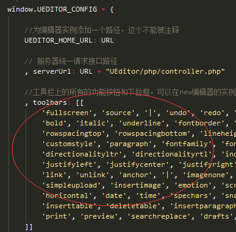
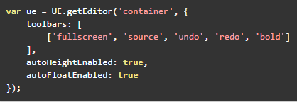
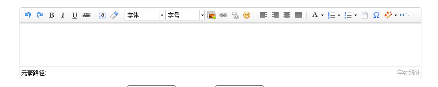
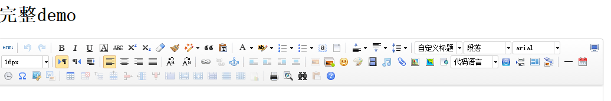
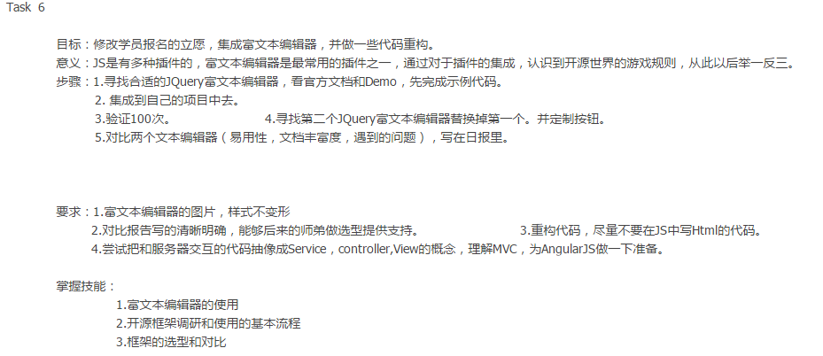

分享人：王奎智
目录
1.背景介绍
2.知识剖析
3.常见问题
4.解决方案
5.编码实战
6.扩展思考
7.参考文献
8.更多讨论
在做Web应用时，经常会进行富文本编辑，常用的富文本编辑器有很多，比如CuteEditor、CKEditor、NicEditor、KindEditor、UEditor等等。好的富文本编辑器可以让我们用户有更好的体验效果，带来更多的用户好评。
在这里为大家推荐百度推出的UEditor，UEditor 是由百度「FEX前端研发团队」开发的所见即所得富文本web编辑器，具有轻量，可定制，注重用户体验等特点，开源基于MIT协议，允许自由使用和修改代码。
1、开始使用UEditor
2、定制自己的工具栏
3、UEditor简单初始化设置
知识点1：开始使用UEditor
（1）UEditor目录：
下载编辑器并解压，部署包解压后的文件目录结构如下所示
dialogs: 弹出对话框对应的资源和JS文件
lang: 编辑器国际化显示的文件
themes: 样式图片和样式文件
third-party: 第三方插件(包括代码高亮，源码编辑等组件）
ueditor.all.js: 开发版代码合并的结果,目录下所有文件的打包文件
ueditor.config.js: 编辑器的配置文件，建议和编辑器实例化页面置于同一目录
（2）UEditor部署：
在HTML中引入配置文件ueditor.config.js和源码文件ueditor.all.js以及jquery库
（3）实例化UEditor：
至此，UE富文本编辑器已经按照默认配置成功部署
知识点2：定制自己的工具栏
UEditor 工具栏上的按钮列表可以自定义配置,只需要通过修改配置项就可以实现需求
修改配置项的方法： 1. 方法一：修改 ueditor.config.js 里面的 toolbars
 2. 方法二：实例化编辑器的时候传入 toolbars 参数
常用功能
完整
知识点3：UEditor简单的初始化设置
常用初始设置：
//focus时自动清空初始化时的内容
autoClearinitialContent:true,
//关闭字数统计
wordCount:true,
//关闭elementPath
elementPathEnabled:true,
//默认的编辑区域高度
initialFrameHeight:200,
// 更多其他参数，请参考ueditor.config.js中的配置项
initialFrameWidth:300
//默认的编辑区域宽度
初始化前后对比图见demo
问题1:实例创建后为什么直接执行接口报错?
问题2：div标签自动转换为p标签
问题1：实例创建后为什么直接执行接口报错?
开发者在创建编辑器时后，会执行一些接口或者调用编辑命令，例如
var ue = UE.getEditor('editor');
ue.setContent('初始化的内容');
//或者调用命令
//ue.execCommand('inserthtml','内容');
这些代码看起来没有问题，编辑器实例也能正确拿到，但就是没有效果
其实出现这种问题，其实是大家不了解UEditor的创建原理导致的。因为UEditor的编辑区域使用iframe作为编辑容器。所以当编辑器创建实例后，先会创建一个iframe元素，然后在iframe元素中写入一些脚本，这些脚本会在iframe元素初始化完成时被调用。
脚本的作用主要是为编辑器实例赋值iframe中的body,window,document对象的引用。 看到这里，大家就应该明白UEditor的初始化过程其实是个异步过程。
因为是个异步过程。所以场景中的书写方式就会出现问题了。虽然工厂方法getEditor能正确返回编辑器实例，但同步的代码ue.setContent马上就被执行了，因为setContent是在编辑容器中写内容，这时需要用到body,document等元素，但这些元素的引用赋值却在异步中才做的赋值。所以才会出现直接执行setContent时会出现无效的问题。当然有时不同浏览器的效果会出现不同。一些高级的浏览器比如chrome有时是可以的，但大部分ie浏览器都不行。这主要是因为浏览器的性能所致的。 那正确的方式是什么呢？
UEditor为开发者提供了ready接口，他会在编辑器所有的初始化操作都结束时调用。保证你要做的操作能在一个完整的初始化环境中执行。
UE.getEditor('editor').ready(function() {
//this是当前创建的编辑器实例
this.setContent('内容')
})
问题2：div标签自动转换为p标签
背景：刚开始使用UEditor的开发者，会发现一个现象，粘贴到编辑器中的内容如果带有div标签，待粘贴到编辑器之后，会发现粘贴到编辑器中的div已经被转换为p标签了。
原因：首先这不是一个bug,这是UEditor对于进入编辑器中的数据进行的过滤处理。在UEditor中表示段落的标签是p标签，很多的编辑操作都是基于p标签进行的处理。
解决方案：
UE.getEditor('editorID', {
allowDivTransToP: false
})
大修真院曾设置的富文本编辑器学习的任务：
html部分:
js部分：
$(document).ready(function () {
var editor = UE.getEditor('editor', { //UEditor编辑器 实例化
initialFrameHeight: 90,//编辑器高度
toolbars: [['undo', //撤销
'redo', //重做
'bold', //加粗,...]]
......
editor.setContent(data.wish)//设置编辑器内容；
wish = editor.getContent();//获取编辑器内容；
...
}
）
....
链接：任务详情
怎么给编辑器添加事件
UEditor内置了很多方法；如
ue.isFocus();//判断编辑器是否获得焦点 ；
ue.hasContents();//判断是否有内容
链接：常用方法
参考：UEditor文档
讨论1：编辑器开源，可不可以参考写一个自己的富文本编辑器？
难度大，考虑问题多，诸如浏览器兼容性等问题
讨论2：对UEditor进行二次开发
难度比前者小，可以参照官网进行
链接：如何进行二次开发
感谢大家观看
BY : 李绍博|陈冲|王奎智